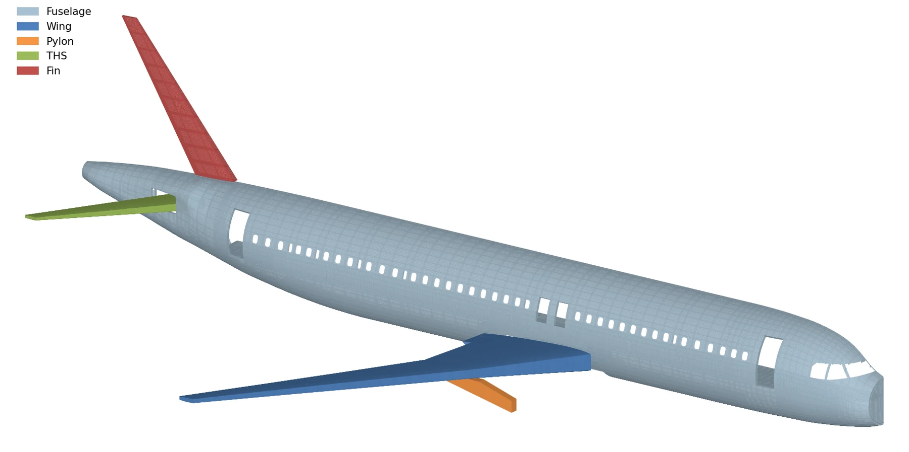

Parametric global FE models
of a complete airframe
Can a full-aircraft structural model be rebuilt automatically whenever the design changes, early enough to inform the layout?
I am developing a Python framework that generates a global finite-element model of a half airframe of a single-aisle reference transport aircraft — fuselage, wing, pylon, horizontal stabilizer and fin — directly from its CPACS geometry definition. Planners first lay out every frame, stringer, rib, spar, floor, door and cutout; HyperMesh then builds and meshes the structure, and the assembled model is loaded and analysed in OptiStruct.
Pipeline & current scope
The model has around 300,000 nodes and 335,000 shell elements, with beam stiffeners, joints between the parts, and a mass model of systems, payload and fuel. Aerodynamic loads for trimmed symmetric manoeuvres come from a vortex-lattice (AVL) or panel-method (OpenVSP/VSPAERO) model, and the analysis covers free vibration, static strength, linear buckling and cabin pressure. Geometry can be built natively in HyperMesh or exported as STEP sheets from Open CASCADE. A complete rebuild and analysis runs unattended in about two hours.
The structure has received an initial fully stressed sizing; coupling it with formal optimization and static aeroelastic load relief is the next step. The framework builds on the parametric approach presented at EASN 2025, AIAA SciTech 2026 and ICAS 2026. The code is in a private GitHub repository.
